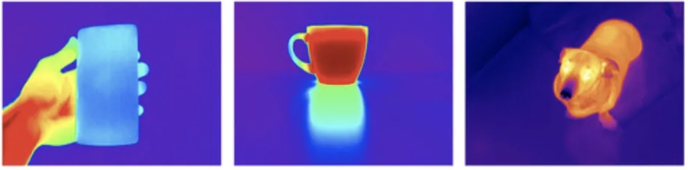
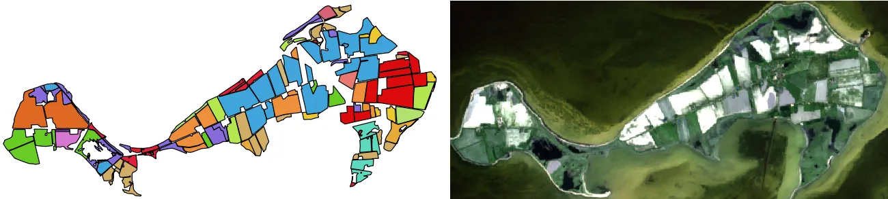
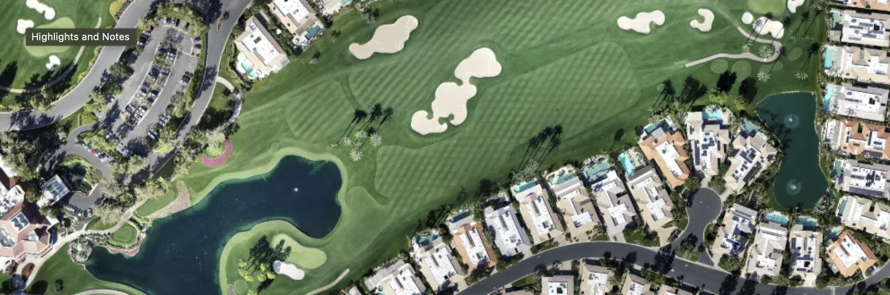
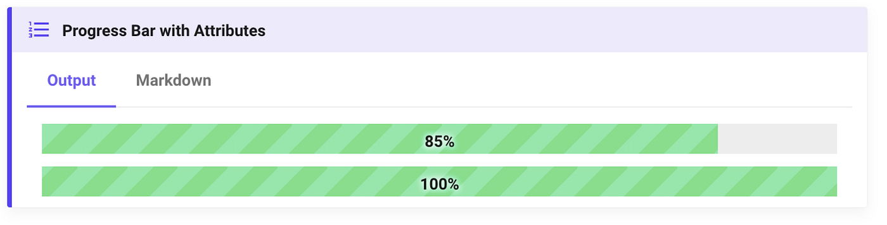
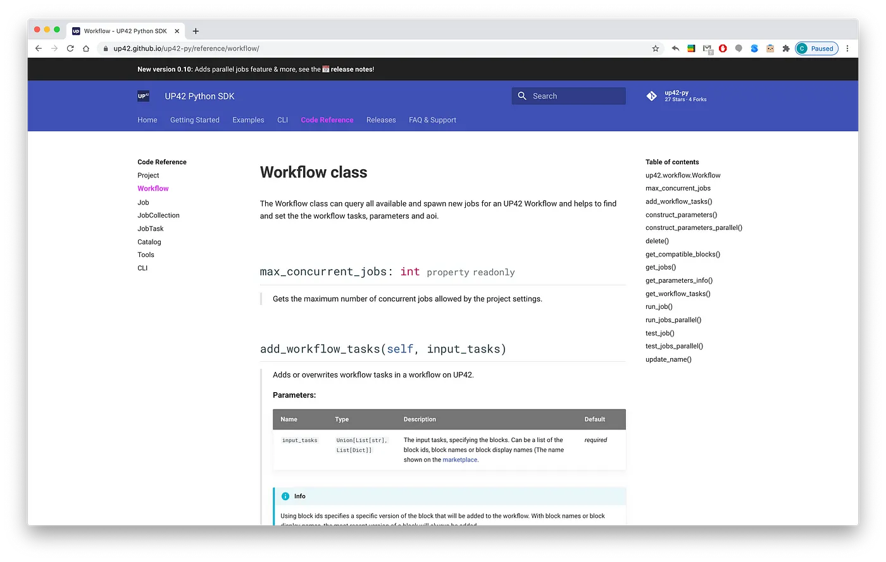
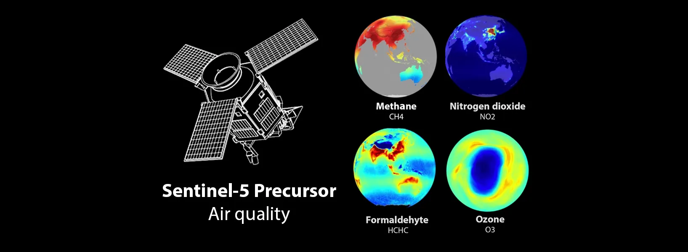
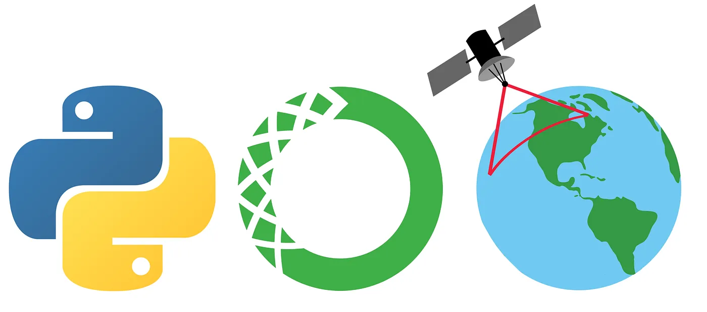
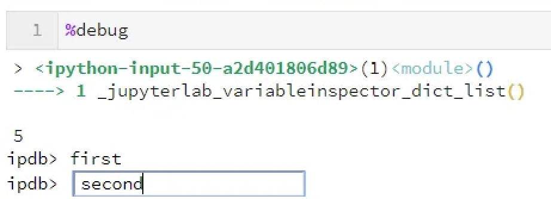

This article shares some guidance and resources for starting a career in the geospatial field. The focus is on learning about jobs & companies, building your profile, finding role models & going to conferences. I also want to share some personal experience to make it clear that no one has it all figured out. Essentially, it is the article that I, as a once clueless student, would have perhaps wanted to read. Read more

Recent funding rounds of startups focused on thermal remote sensing made me much more curious about this field. Here is a quick introduction to thermal imaging, applications and thermal satellite startups. Read more

This is a quick overview of essential Python libraries for working with geospatial data. What I think might be valuable for newcomers in this field is some insight on how these libraries interact and are connected. Read more

This tutorial lets you train a land cover classification model with high-resolution Dronedeploy UAV imagery using fastai and Google Colab. No requirements, in-browser, with a GPU. Read more

MkDocs, the powerful and easy-to-use documentation framework, gets even better when using its community developed plugins. This article shows some of the best customization options and plugins for e.g. diagrams, code reference, notebook integration, macros, pdf generation etc. Read more

This article shows how to create a Python package documentation with code reference via mkdocs-material. This documentation framework is beautiful out of the box, powerful but simple to configure and customise, and it uses Markdown! It offers a great alternative to the popular Sphinx docs. Read more

The Sentinel-5P satellite mission enables air quality monitoring on a global scale. This piece shares an overview of Sentinel-5P’s characteristics, data products, the important distinction between processing Level-2 & Level-3, as well as some of the satellite’s applications for air quality monitoring and climate research. Read more

This Howto gives step for step instructions on setting up a Python 3 environment on Windows with gdal, rasterio, geopandas and other essential geospatial libraries. Read more

Just a couple of JupyterLab & Notebook features that I didn’t know a year ago but am now using a lot. Read more
Do you want to pull all meetings & events from your or any shared Google calendar via the Google calendar API in Python? This blogpost provides step-for-step instructions on how to setup authentication, request calendar events and handle the pagination token. Read more